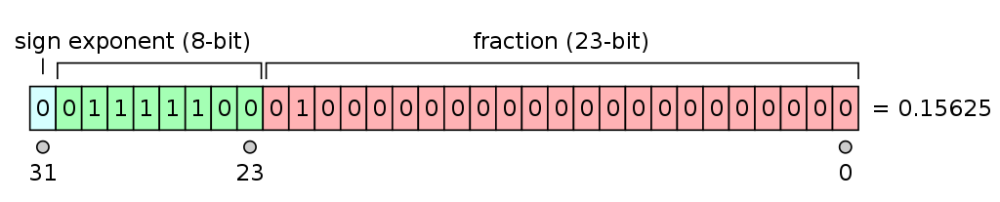
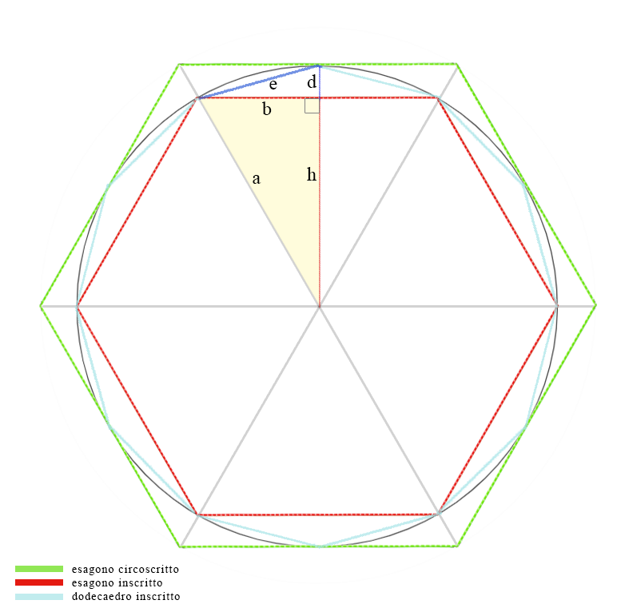
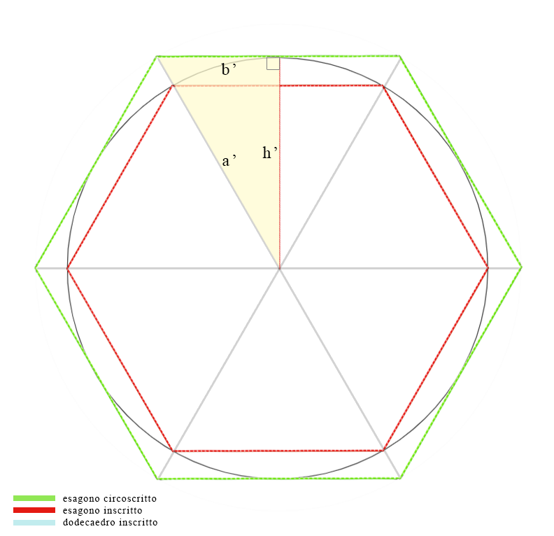
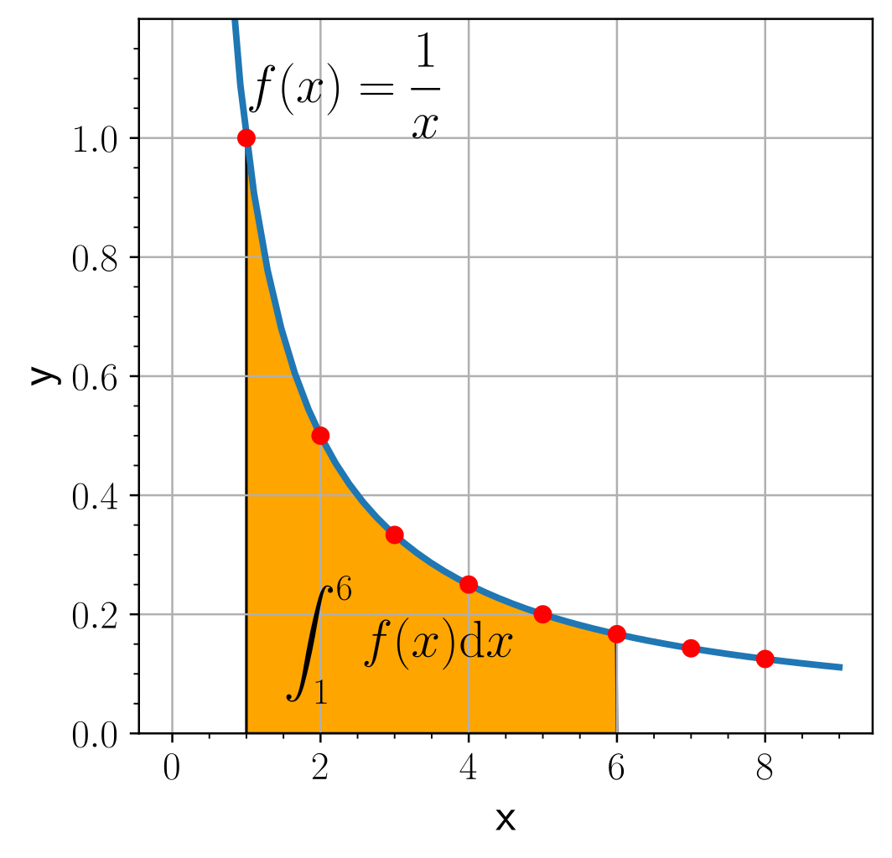
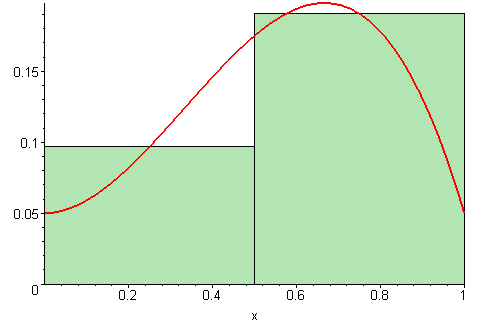

Nella scorsa lezione abbiamo parlato dei limiti dei computer e abbiamo definito cos’è il calcolo numerico. Ma nella pratica, quali sono i limiti dei calcolatori che devono manipolare numeri?
Torniamo al pi greco𝛑
Qual’ è il valore del Pi greco?
Quante cifre di questa famosa costante vi ricordate? E soprattutto, quante cifre dobbiamo utilizzare nei calcoli?
Se volessimo calcolare il valore della circonferenza di un CD, probabilmente useremmo la formula diametro∗3.14 , ma se stessimo lavorando alla NASA e dovessimo calcolare un’orbita dal raggio di più di 2.3∗1010Km(23 miliardi di chilometri!), equivalente alla distanza a cui si trova la navicella spaziale più lontana da terra (il Voyager 1), allora avremmo sicuramente bisogno di un valore di 𝛑 con più cifre. Ovvero, avremmo bisogno di una numero più preciso!
Infatti, la differenza nei risultati dalla circonferenza utilizzando 𝛑 con due cifre decimali e con quindici cifre decimali è di più di 74 milioni di chilometri!
Per questo motivo è indispensabile utilizzare più di due cifre decimali, e infatti sono quindici le cifre decimali del 𝛑 che la NASA utilizza normalmente nei suoi calcoli [1]:
Anche nei computer la rappresentazione del valore di 𝛑 è necessariamente una approssimazione, perché non abbiamo a disposizione una quantità infinita di bit per memorizzarlo!
Esercizio 03
Quante cifre ha la costante math.pi di Python?
Qual è il suo tipo di dato?
Numeri di macchina
💡 Un numero di macchina è la rappresentazione di tale numero in un calcolatore.
Il pi greco è un numero reale e, in quanto tale, in Python è rappresentato come un floating point (o “numero in virgola mobile”).
Lo standard IEEE 754 definisce la rappresentazione e le operazioni dei floating point.
Numeri Floating Point: un ripasso
I numeri floating point si distinguono in base al numero di bit utilizzati per la rappresentazione:
Floating point a singola precisione: 32 bit
1 bit di segno, s
8 bit per l’esponente, e
23 bit per la mantissa, m
Figura 5: schema dei floating point a singola precisone.
Credits: Codekaizen
Floating point a doppia precisione: 64 bit
1 bit di segno, s
11 bit per l’esponente, e
52 bit per la mantissa, m
Figura 6: schema dei floating point a doppia precisione.
Di conseguenza ogni numero arbitrario è rappresentato nel seguente modo (dove m è normalizzata, ovvero inizia sempre con 1 ed indica le cifre del numero da rappresentare):
n=(−1)s⋅2e⋅m
💡 I float di Python sono numeri a virgola mobile a doppia precisione.
🤖 Le limitazioni dei numeri macchina: alcuni principali errori
Esercizio 04
Leggi il seguente codice:
u = 1
i = 0
while 1 + u > 1:
u = u / 2
i = i + 1
Cosa accadrà in esecuzione?
Il numero finito di bit usati dai numeri di macchina implica che alcuni numeri saranno rappresentati con un errore di arrotondamento! Come succede con il pi greco, che è un numero dalle cifre infinite.
Quindi, i numeri macchina sono un insieme finito e limitato di numeri rappresentabili! Numeri troppo piccoli e numeri troppo grandi non potranno essere rappresentati come floating point.
La libreria Python sys permette di ottenere informazioni al riguardo:
import sys
sys.float_info
Se possiamo scrivere il numero 1.7*10**308 senza problemi, con il numero 1.8*10**308 Python stamperà inf per indicare che il numero è troppo grande (inf = infinity). Questo è un caso di overflow aritmetico.
Similmente: il numero 2.3*10**-308 è molto vicino al più piccolo numero rappresentabile, e numeri più piccoli verranno arrotondati a 0.0, fenomeno detto underflow aritmetico.
💡
Nota: prova a scrivere il numero 2.2*10**-309 nell’interprete di Python. Cosa succede?
Numeri più piccoli rispetto al minimo indicato da sys.float_info possono essere rappresentati utilizzando una notazione non normalizzata della mantissa (permettendo valori di m che iniziano con 0).
Quindi è meglio lavorare con numeri piccoli, piuttosto che con numeri molto grandi!
Archimede fu in grado di calcolare una buona approssimazione di pi greco utilizzando un metodo numerico chiamato metodo di esaustione.
Il metodo di esaustione permette di calcolare l’area di una figura geometrica piana approssimandola con quella di poligoni, che con l’aumentare del numero di lati diventano sempre più simili alla figura originale.
In particolare, il metodo di Archimede per l’approssimazione del pi greco si basa sul calcolo di un limite inferiore e di un limite superiore per la costante, rispettivamente ottenuti dal poligono inscritto e circoscritto.
La serie di approssimazioni parte dall’esagono, e ad ogni iterazionesi utilizza un poligono regolare con il doppio dei lati del precedente.
💡
Un po’ di geometria…
Consideriamo un cerchio di raggio r=1.
Il metodo per il calcolo approssimato di 𝛑 inizia da due esagoni regolari (con numero di lati n=6). Scriviamo tutti i dati interessanti:
Esagono inscritto
lato del poligono
l=a=r=1
lato b
b=2l=21
altezza h
h=1−(2l)2
area
A=n∗2l⋅h
Esagono circoscrittoSiccome i due triangoli evidenziati in giallo sono triangoli simili, i loro lati sono proporzionali.
altezza h′
h′=r=1
lato b′
rapporto rapp=hh′=h1b′=rapp⋅b
lato del poligono l′
l′=2⋅b′
area
A′=n∗2l′∗h′
Siccome l’area del cerchio è Area=π⋅r2, e r=1, allora il limite inferiore e superiore di pi greco sono rispettivamente A e A′!
Schema 1: esagono e dodecagono inscritti alla circonferenza.Schema 2: esagono inscritto ed esagono circoscritto alla circonferenza.
💪 Mancano pochi calcoli e sarà possibile passare all’iterazione successiva!
Dobbiamo solo “costruire” il poligono regolare successivo, aggiornando alcuni valori...
ni=n⋅2
Qual è la lunghezza del lato del nuovo poligono?
Sfruttiamo il poligono precedente (come nell’immagine Schema 1).
d=r−h
il lato del poligono è quindi li=e=d2+b2
Esercizio 05
Partendo dalla descrizione del metodo di esaustione di Archimede, implementa un codice Python che esegue le prime 15 iterazioni del metodo, stampando ogni limite inferiore e superiore.
Esercizio 05 +
Modifica il codice precedente in modo che ad ogni iterazione la stampa comprenda il valore stimato di π come media dei due limiti ottenuti, così come il suo errore assoluto (valore assoluto della differenza tra il valore reale e il valore calcolato Ea=∣val−val∗∣) e il suo errore relativopercentuale (dove l’errore relativo è Er=∣val∣Ea).
💡
Il metodo di esaustione vi ricorda qualcosa?
Questo metodo è alla base del concetto di integrale di una funzione!
Metodo dei rettangoli
Un integrale definito sugli estremi [x0,x1] associa ad una funzione l’area sottesa al suo grafico e compresa tra gli estremi stessi. Come nel seguente esempio:
Figura 7: Esempio di integrale definito.
Credits:Krishnavedala
Una delle tante aree di studio del calcolo numerico è proprio quella del calcolo (o della stima) degli integrali definiti!
Esercizio 06
Provate a costruire lo pseudo codice Python del metodo dei rettangoli per il calcolo approssimato degli integrali definiti di una funzione:
Un metodo molto conosciuto è il metodo dei rettangoli (o somma di Riemann), che approssima il valore dell’integrale definito tra [x0,xf] di una funzione f(x) con un numero finito di somme di aree, costruite nel seguente modo:
si divide l’intervallo [x0,f] in n sotto intervalli uguali di larghezza b=n∣xf−x0∣;
su ogni intervallo [xi,xi+1] si costruisce un rettangolo di altezza f(2xi+1−xi), ovvero di altezza uguale al valore della funzione f nel punto medio dell’intervallo;
il valore stimato dell’integrale equivale alla somma delle aree dei rettangoli costruiti: ∫x0xff(x)dx≃∑i=x0xf−1f(2xi+1−xi)⋅b
💡
Nota: più gli intervalli sono piccoli, più l’area calcolata sarà vicina a quella sottesa alla curva, e più accurato sarà il valore stimato dell’integrale.
Figura 8: Animazione del metodo dei rettangoli (metodo di Riemann mid point) al crescere del numero degli intervalli di suddivisione.
Credits: 09glasgow09

{kind=link}

{kind=link}
{kind=link}
{kind=link}
{kind=link}
.gif){kind=link}
{kind=link}